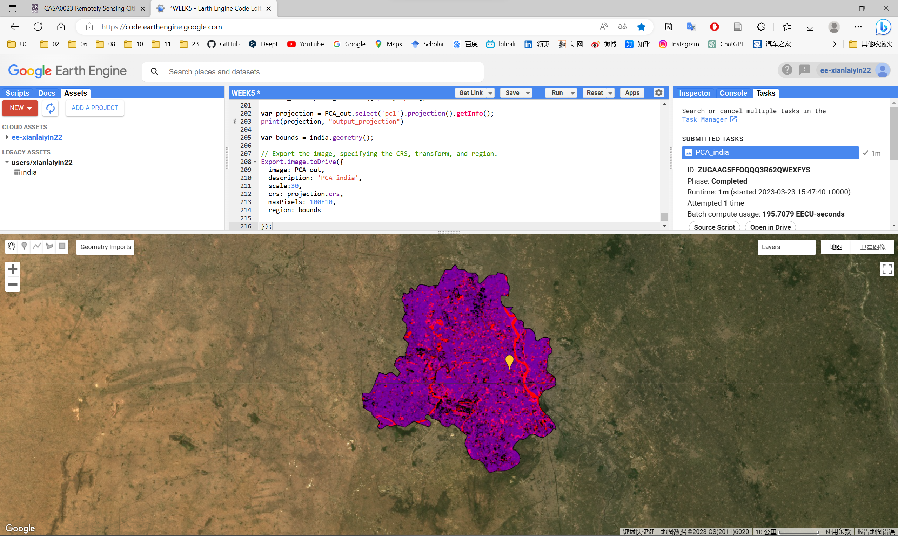

WEEK 5
An introduction to Google Earth Engine
This is a learning diary of CASA0023 WEEK 5, the lecture presentation is here, and the practical material is here.
1 Summary: lecture
This week’s content is an introduction to the basics of GEE, including its features, functions and application scenarios. It also introduces the use of the basic functions of GEE Javascript in relation to R, such as loading image collections, reducing images, regression, joins and filtering.

1.1 The setup of GEE
Google Earth Engine
-
"Geospatial"processing service - It permits geospatial analysis
at scale - Stores data on servers
- Takes the code and applies it
- Can be used to make
queryable online applications
GEE terms
-
Image= raster -
Feature= vector -
Image stack= ImageCollection -
Feature stack(lots of polygons) = FeatureColletion
GEE Javascript
GEE uses Javascript (Website programming language)
There are some similarities to python and R but there are some notable differences
- Variables (or objects) as defined with var
- A specific part of code ends with a ;
- Objects are dictionaries in Javascript
Client vs server side
- Within GEE we have code that runs on the
client side (browser) - We have code that runs on the server side (on the server where data is stored)
- In GEE we have
Earth Engine Objects= starting with , for example,ee- Anything that has ee in front of it is stored on the server
- It has no data in script. Recall in R the data environments, this would be empty
- They are termed
"proxy objects": the agency, function, or office of a deputy who acts as a substitute for another - Any pre-loaded data product will be on the server side
Looping
- We can’t (or shouldn’t) use a loop for something on the server
- The loop doesn’t know what is in the ee object
Mapping functions
- Instead we can create a function and save it into an object (or variable here)
- Then apply it to everything on the server
- Same idea as
map()in R from the purrr package
Server side functions
- Same as the data
ee.Thing.method()- Saved function on the sever that can be run without mapping
Loop vs Map
Loop
- Run some code on each element in an array
- Save it in a new array (or update existing)
Map
- Code is applied to each element
- The conditions are dealt with,
no indexingat the end
Why map in GEE?
- Otherwise we might load the complete image collection many, many times when looping
- The loop doesn’t know what is inside the collection
- Mapping lets GEE allocate the the processing to different machines with map. I assume as it knows how many images we have and the function it must apply…With a loop it doesn’t know until the next interation
Scale
- Image scale in GEE refers to
pixel resolution - In GEE the scale (resolution) is set by the output not input
- When doing analysis
- GEE aggregates the image to fit a
256x256 grid - Earth Engine selects the pyramid with the closest scale to that of analysis (or specified by it) and resamples as needed
- resampling uses
nearest neighborby default
- GEE aggregates the image to fit a
Projections
- Do not need to worry about projects in GEE
- GEE converts all data into the
Mercator projection (EPSG: 3857)when displayed, specifically: WGS 84 / Pseudo-Mercator – Spherical Mercator, Google Maps, OpenStreetMap, Bing, ArcGIS, ESRI - The operations of the proejction are determined by the output
- Setting the projection is allowed, but there is no real reason to do this
1.2 GEE in action

Building blocks of GEE

Object: vector, raster, feature, string, number
- Each of these belongs to a
class - Each class has specific
GEE functions(or methods) for it
Raster data (lots of images)
- They belong to an
image collection(as there are lots of images) - Using the specific function (
methodor"constructor") to load and manipulate
Geometries and Features
-
Geometry= point/line/polygon with no attributes- Note we can also have MultiPolygon or MultiGeometry
-
Feature= geometry with attributes -
Featurecollection = several features with attributes
What typical processes can do in GEE?
Geometry operations (e.g. spatial operations)
Joins-
Zonal statistics(e.g. average temperature per neighbourhood) -
Filteringof images or specific values
Methods
Machine learning- Supervised and unsupervised
classification -
Deep learningwith Tensor Flow - Exploring relationships between variables
Applications/outputs
- Online charts
- Scalable geospatial applications with GEE data
- These let us query the data with a user inteface that then updates the results
Reducing images
This is combines the previous two ideas
- In the first instance we load an image collection from a dates and place
- We want to reduce the collection to the extreme values for each pixel
Reducing images by region
- One of the most useful functions we can use here is termed zonal statistics
- In GEE this is termed
reduceRegion() - What if we want to use a feature collection (with many polygons), same idea, but with
image.reduceRegions()
Reducing images by neighbourhood
- Instead of using a polygon to reduce our collection we can use the
image neighbourhood- A window of pixels surrounding a central pixel
- Like a filter or texture measure
- Although texture has its own function
Linear regression
The real benefit of GEE is being able to access all imagery for multiple sensors, what if we wanted to see the change over time in pixel values - linearFit()
-
linearFit()takes a least squares approach of one variable. 2 bands:- Band 1: dependent variable
- Band 2: independent variable (often time)
- This runs of a
per pixelbasis - This is still considered a
reduceras we are reducing all of the data to two images-
Offset- intercept -
Scale- line of the slope We can use additional variables like we have seen before, including multiple dependent variables…this is termedMultivariate Multiple Linear Regression. This just does the same as OLS for both of the dependent variables, the only difference is with acovariance matrix.
-
We can combine reducers for regression
- Regression per pixels (typically with an image collection over several years)
- Regression of all the values within a polygon (taking an image of 1 date, extracting all the pixels and then running regression)
- In GEE we must add a constant as an independent variable for the intercept (unless it is 0)
Joins
Joins in GEE are similar to joins in R
- We can join image collections (e.g. satellite data from January with data from October)
- We can join feature collections (e.g. different polygons)
To use joins we have to put them within a filter (ee.Filter)
- The
leftFieldis the index (or attribute) in the primary data - The
rightFieldis the secondary data - We set the type of join
- simple: primary matches any in secondary
- inverted: retain those in primary that are not in secondary
- inner: shows all matches between collections as a feature collection
- We then combine (or join) with
join.apply()
GEE can also do a spatial join and intersect
2 Summary: practical
This week’s practical will consist mainly of the following:
- Acquire remote sensing image data using GEE and perform basic operations such as clipping and mosaicing of data
- Remote sensing image pre-processing and band mathing using GEE
- Exporting GEE analysis results
- GEE-related applications and data
In this week’s practical, I learnt the basic operations of remote sensing data processing using GEE. I followed the instructions to process and analyse the Landsat remote sensing image data from New Delhi, including texture measures, PCA, band math, etc. However, I was pleasantly surprised to learn about a lot of applications developed using GEE, which were very interesting and greatly broadened my view of remote sensing image applications and made me look forwards to developing applications using GEE.

3 Application
As mentioned above, there are a wide variety of valuable applications that can be developed using GEE, and I would like to explore the applications that can be developed based on GEE
3.1 Applications developed on the basis of GEE
GEE provides powerful computing capabilities for processing and analysing geospatial data and can be of great use in a number of areas.
Land cover change detection: By comparing remotely sensed images from different time periods, land cover changes such as urban expansion, deforestation and wetland degradation can be detected. For example: Google Earth Engine Timelapse.
Forest health monitoring: Using high resolution and multi-temporal remote sensing imagery to analyse forest growth and identify forest health issues such as pests, drought and fire. For example: Global Forest Watch (GFW).
Agricultural management: Remote sensing imagery is used to analyse crop growth, acreage and yields to provide strong support for agricultural production and food security. For example: Cropland Mapping App.
Water resources monitoring: Using remote sensing data to analyse the area of water bodies, water quality conditions and changes in water resources, providing a scientific basis for water resources management and protection. For example: Global Surface Water Explorer (GSWE).
Climate change research: To explore the causes and impacts of climate change by analysing long-term changes in surface temperature, precipitation, snow and ice and other climate factors. For example: Climate Engine.
Disaster assessment and management: Using remote sensing images to detect natural disasters such as floods, earthquakes and landslides in a timely manner, providing information to support disaster assessment and rescue work. For example: DFO Flood Observatory Web Map Server.
Ecosystem service assessment: Evaluate the value of ecosystem services to humans by analysing ecological indicators such as land cover, vegetation productivity and biodiversity. For example: NDVI slider.
Urban planning and management: Analyse urban construction land, traffic conditions and green space distribution through remote sensing images to provide decision support for urban planning and management. For example: Urbanization Explorer.
Air quality monitoring: Using remote sensing data to analyse the concentration and distribution of atmospheric pollutants, providing data support for air quality monitoring and environmental protection. For example: Europe’s Air Quality Winner.
Wildlife protection: analyse wildlife habitats, migration paths and the status of protected areas through remote sensing images to provide scientific basis for wildlife protection. For example: eBird.
3.2 Application case
Sourse
Global Forest Watch (GFW) , Sourse: GFW
About GFW
Global Forest Watch (GFW) is an online platform that provides data and tools for monitoring forests. By harnessing cutting-edge technology, GFW allows anyone to access near real-time information about where and how forests are changing around the world.
Map & dashboards on GFW
The map & dashboards on GFW allow to explore hundreds of spatial datasets that help explain when, where and why forests are changing around the world.
The map helps tell a visual story about what’s happening to forests in a particular place. Zoom in anywhere in the world to explore how forests are changing, how they’re managed and the values they provide. Layer data – like annual tree cover loss, land use data and satellite imagery – to better understand the underlying causes and impacts of forest change.
The dashboards help answer important questions about forest change in any area and enable you to view hundreds of statistics through interactive charts and graphs, all derived from analysis of spatial data. Statistics can be customized to be as general or specific as you like and can be easily shared and downloaded for offline use.
3.3 Case comments
Advantages or contribution
- Global: GFW can provide forest monitoring data and information on a global scale, allowing governments, businesses, NGOs and citizens to understand the state of the world’s forest resources.
- Timeliness: GFW can provide almost real-time forest monitoring data and information that can help identify and respond to deforestation, wildfires and other natural disasters in a timely manner.
- Diversity: GFW can provide a wide range of data and information, including maps, satellite imagery, data analysis and stories, to meet the needs of a variety of users.
- Openness: GFW uses open data principles that allow anyone to use and share data and information, thus increasing the reliability and value of the data used.
Disadvantages or potential
- Data quality: GFW relies on a variety of data sources, including satellite imagery, ground-based observations, interviews, etc. Data quality varies and may be subject to error.
- Data updates: Although GFW can provide almost real-time forest monitoring data and information, some data can be slow to update and it can take some time to wait for the latest data to become available.
- Threshold of data use: GFW data and information require a certain level of expertise and skills to use and analyse, which may be difficult for non-expert users.
- Data privacy: GFW’s data and information may contain some sensitive information that requires attention to data privacy protection.
4 Reflection
During the week I have been learning about the basic principles and operational aspects of GEE and have been excited to learn about the many applications of GEE. Sometimes I want to upload my research to the web for interactive use, but I don’t know much about web development or software development due to my professional background, and GEE provides a platform for this, as well as a very rich data source and analysis tools to support the development of applications, which has a very wide range of applications. In addition, the interactive web platform provides a window of communication between urban planning and the public, making it easier to collect and publicise data.
However, I have concerns about data privacy and copyright. On the one hand, I am concerned that my privacy may be compromised, and on the other hand, I am concerned that there may be unknowing copyright infringement in the data used, which requires careful attention during development.